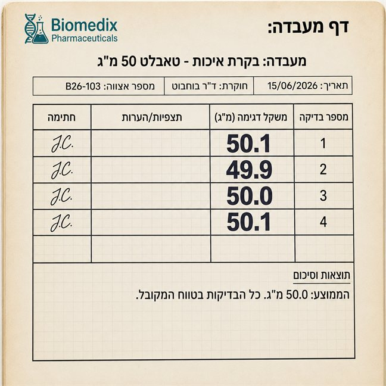
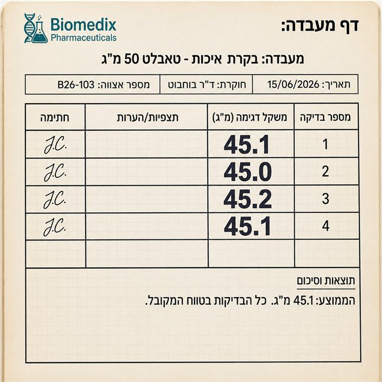
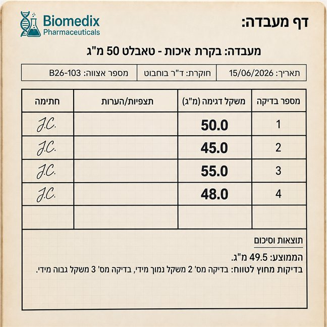
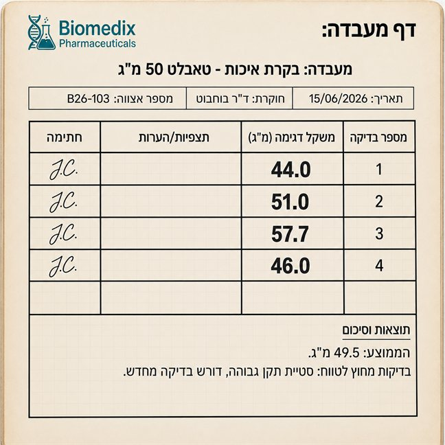

כל הכבוד שניסית, זה חשוב מאוד!
כדי לחזק את ההבנה נמשיך לתרגל -
3 שאלות פשוטות יותר
וכבר בהתחלה יש רמז! ענו נכון על 2 שאלות ומעלה (75%) כדי להתקדם.
תוצאת המדידה השנייה שווה ל: 12.0 גר'
תוצאת המדידה השלישית שווה ל: 18.7 גר'
תוצאת המדידה הראשונה שווה ל: 12.1 גר'
עדן, פלג ושחר ביצעו בשיעור מדעים סדרת מדידות של מסת מוצק.
סעיף א: האם ישנה תוצאה חריגה בעיניכם? מהי?
תוצאת המדידה השנייה שווה ל: 12.0 גר'
תוצאת המדידה השלישית שווה ל: 18.7 גר'
תוצאת המדידה הראשונה שווה ל: 12.1 גר'
עדן, פלג ושחר ביצעו בשיעור מדעים סדרת מדידות של מסת מוצק.
סעיף ב: האם על שחר, עדן ופלג לבצע מדידה נוספת?
ד"ר בוחבוט, חוקרת בחברת ביומדיקס, מדדה את מסת אותו חומר 4 פעמים. הערך האמיתי של החומר הוא 50.00 גרם.
גררו כל תיאור אל המדידה המתאימה:




דן החוקר מדד מסה של גוף מוצק 3 פעמים. לאחר שהבחין שאין תוצאה חריגה במיוחד, הוא חישב את ממוצע המדידות וקיבל את התוצאה 50 גר'.
תוצאה במדידה הראשונה: 50 גרם
תוצאה במדידה שנייה: 52 גרם
לפתע הבחין דן כי התוצאה של המדידה השלישית נמחקה.
סייעו לדן לשחזרה